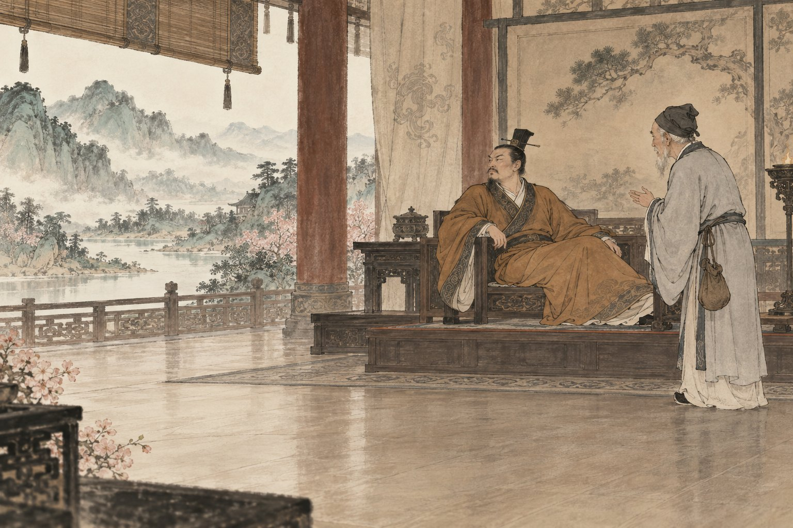
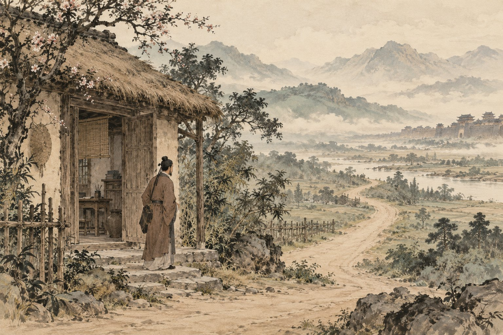

原文点有细线的字词，读音释义即现

慢读先看一幅画，再读一段文。
把每次相见连起来，看看什么变了，什么没变。
画卷目录从任意一幕，走进故事
给一起读书的大人
可先读前三次相见，让孩子比较，再读突然转身与结尾。不把故事讲成吓人的教训；与《邹忌讽齐王纳谏》对读时，重点比较收到提醒之后采取的行动。
白话、赏读和深入讨论按需展开。留给孩子自己的感受，不预设标准读后感。插画是依据文章展开的艺术想象；人物、衣饰、建筑与细节并非历史实景复原。
查看原文版本与资料说明 →停一停 · 你来发现
水墨插画为艺术想象 · 可用键盘 ← → 翻页
把六幕，连成一篇
扁鹊见蔡桓公
〔战国〕韩非
文止于此，回味未止。
把字词，放回句子里
字词小笺
认一个字，也看它在这一句里做什么。
把意思，放回这一句话
有间与居十日
立有间：站了一会儿。
居十日：过了十天。
还走
还同旋，转身。
走在古文中常指跑。
是以无请
是以：因此。
无请：不再请求为他治病。

合上书，还能带走什么
给提醒一个被核实的机会
一句话是否中听，
与它有没有依据，是两件事。
留下一句，属于自己的体会。
从一次相见中选一个动作，写下你看见的变化或仍有的疑问。
只保存在当前浏览器中。
想聊得更深一点：听取提醒，就是立刻照做吗？
把桓侯的回应与齐威王的回应放在一起比较。除了“全信”或“全不信”，你还能提出一种查明事实、再决定行动的办法吗？
聊过之后，再读一种理解
文章批评桓侯一再拒绝了解问题，强调不要因为不愿面对就忽略变化。听取提醒可以从询问理由、核对证据、寻求合适的帮助开始，并不等于不经判断就接受所有说法。现实疾病复杂，也不能用这则故事给患者贴上“自作自受”的标签。
走近写下文字的人：韩非
韩非是战国时期思想家。《韩非子·喻老》借故事阐发道理，本文把多次相见连成逐步推进的叙事。人物说话与动作的重复、最后一次的突变，都服务于说理；本册将它作为古代文学与思想文本来读。
原文与资料 →纸上
再读第一幕 →画出两条并排变化的线。
在纸上按几次相见排列时间，只用你从原文找到的词语，分别写扁鹊的判断与桓侯的回应。选一个你认为最值得停下来查证的节点，说出依据；不必替人物编出一篇标准反思。
卷末 · 资料与制作
每一篇，都有文字的来处。
原文与版本
选自《韩非子·喻老》，据香港教育局公开参考文本核对，保留“蔡桓公”“桓侯”“还走”“汤熨”“火齐”等原文字样。全篇分六幕，全文按五次时间推进整理为五段；第四次相见与扁鹊的解释合为一段。繁体转简体，标点按现代阅读习惯整理。
校核来源：香港教育局：《扁鹊见蔡桓公》参考原文；古文岛：《扁鹊见蔡桓公》。查阅日期：2026 年 10 月 29 日。古文为公版作品；白话、释义、赏读与共读提示为本册重新组织。
读音与理解
“扁鹊”读 biǎn què；“腠理”读 còu lǐ；“还走”的还同“旋”，读 xuán，走是跑；“汤熨”读 tàng wèi；“火齐”读 huǒ jì。病情层次、古代疗法与司命神均按文学文本解释，不是现代诊疗知识。文中人物称谓依原文保留，不据此重建确切历史病案。
六幅水墨画
插画使用内置 image_gen 工具生成。原图与完整提示词保存在本册制作文件中。水墨画帮助读者想象文章，人物、场所、器物是艺术表现，不是历史照片、科学图鉴或精确实验记录。
离线与书架
单文件 HTML 内含本册插画、样式和交互，可以单独阅读。保留原目录结构时可返回书架或切换篇目。来源链接需要网络。
孩子主动填写的话按篇尝试保存在当前浏览器。移动文件、更换浏览器、设备或隐私模式可能影响保存，请导出重要记录；记录不上传，也不会被打入阅读压缩包。书架不代表孩子已经学习或掌握。
回到封面 →